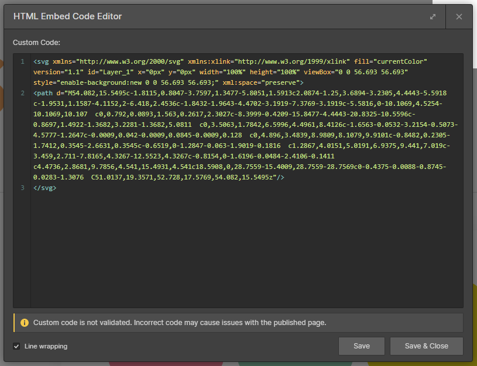
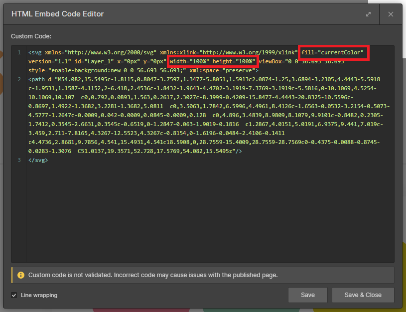

Instruction
Hero slider
If you want to change the slider text, please follow this tutorial:
Horizontal Scroll
If you want to change the content, please follow this tutorial:
Svg icon
If you want to add an SVG icon, follow these steps:
-
Add a new embed element and paste the SVG code inside
 -
Change the fill with fill = "currentColor" and width = "100%" height = "100%"
